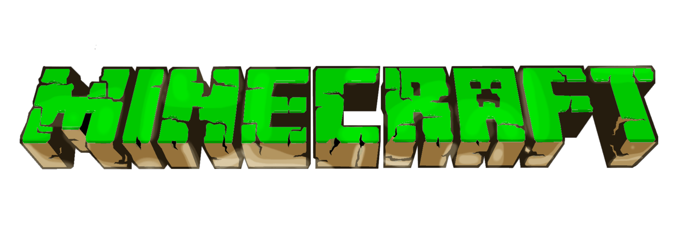
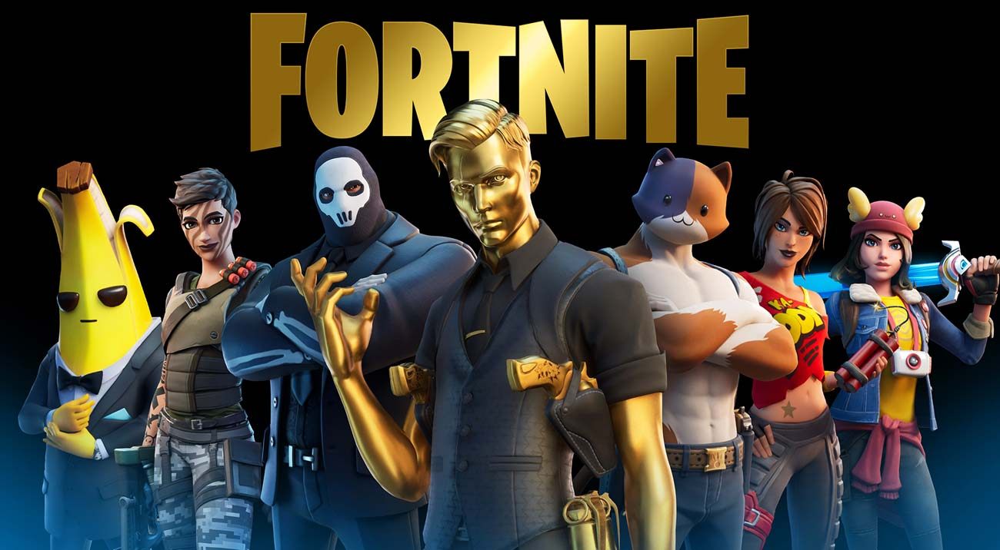

.png)
Uni-Games
5 jogos mais jogados do mundo!
>Minecraft
Já ouviu falar sobre Minecraft? Creio que sim! A primeira vez que o jogo surgiu na internet foi em 2009, como um projeto online do programador sueco Markus Notch Persson, conhecida como versão Classic.
O usuário podia mexer nos blocos, mas ainda não
havia os elementos de sobrevivência que tornariam
o entretenimento tão popular e tão CONHECIDA
nos tempos atuais.
O jogo ficava disponível de graça, porém era
possível comprar essa versão do game em
um modelo inédito, no qual investia-se no
jogo incompleto para continuar recebendo
as atualizações futuras sem pagamentos
extras. Foi o nascimento do modelo Early
Access ou Acesso Antecipado.
Essa informação passada sobre o primeiro
ano de lançamento dessa diversão, foi uma
novidade ou você já sabia por ser um fã igual
a mim? HAHA!
Confesso que quando ganhei meu primeiro
celular Touch, me reunia com mais alguns
amigos no intervalo da escola para jogar
e se divertir com a versão mobile.
Alguns vão pensar: Não tive oportunidade
de jogar a primeira versão. Espera ai, tenho
uma surpresa pra vocês. No link abaixo vai te
conduzir a ter uma experiência de jogar o Classic
e ter a mesma diversão de quem jogou no seu
primeiro ano lançamento!
9 Curiosidades sobre o jogo que você não sabia:
1 - A primeira versão foi criada em seis dias (Esta em primeiro lugar hoje em dia).
2 - Quarto jogo mais vendido de todos os tempos.
3 - Minecraft é a junção das palavras mine (mina ou minerar)
e
craft (fabricar com as mãos).
4 - Minecraft foi inspirado em outros jogos, sendo eles: Dungeon Keeper,
Dwarf
Fortress, Infiniminer e RollerCoaster Tycoon.
5 - O primeiro nome de Minecraft foi Cave Game, dessa você não sabia, né?
6- De vez em quando o jogo erra o próprio nome: mostrando Minceraft no lugar.
A estimativa é que isso aconteça 1 em cada 10 mil vezes que você execute o jogo.
7- Minecraft é o jogo com mais visualizações no Youtube.
8- Existem mais de 350 mensagens amarelas para o menu principal.
9- Creepers foram criados por acidente.
>Fortnite
 O que é Fortnite e por que ele está em todo lugar?
Fenômeno de vendas, audiência e popularidade,
Fortnite é um dos títulos mais jogados do mundo
na atualidade. É um dos títulos mais lucrativos do
mercado, avaliado atualmente por US$ 28,7 bilhões.
Uma das grandes sensações dos últimos anos nos
esports, Fortnite é um jogo dos estúdios da Epic Games,
na Carolina do Norte. Ele possui dois principais
modos de jogos: o Salve o Mundo que é um modo
de jogo pago e o Battle Royale que pode ser jogado
gratuitamente em qualquer plataforma inclusive
em celulares.
Ainda que Fortnite seja um jogo relativamente recente,
o game tem campeonatos a partir da realização da Copa
do Mundo de Fortnite em 2019, a Epic Games deu outro
rumo ao competitivo do game.
O grande e principal campeonato do battle royale é a
Fortnite Champions Series (FNCS), que geralmente tem
a edição principal acontecendo uma vez por temporada e
agracia os vencedores com uma compensação financeira
robusta.
>League of legends

League of Legends (abreviado como LoL e comumente
referido como League) é um jogo eletrônico do gênero
multiplayer online battle arena (MOBA) desenvolvido e
publicado pela Riot Games. Foi lançado em outubro de
2009 para Microsoft Windows e em março de 2013 para
macOS.
Inspirado em Defense of the Ancients (DotA), uma
modificação de Warcraft III, os fundadores da Riot
buscaram desenvolver um jogo autônomo do mesmo
gênero. Desde o seu lançamento, o título é gratuito
para jogar e monetizado por meio de personalização
de personagens, a qual é obtenível através de uma
moeda virtual comprável com dinheiro real.
No jogo, duas equipes de cinco jogadores batalham
em um combate jogador contra jogador (PvP), com
cada equipe ocupando e defendendo sua metade do
mapa. Cada um dos dez jogadores controla um
personagem, conhecido como campeão, com habilidades
únicas e diferentes estilos de jogo.
Durante uma partida, os campeões se tornam mais
poderosos ao coletarem pontos de experiência,
ganharem ouro e comprarem itens a fim de derrotar
a equipe adversária. No modo principal, Summoner's Rift,
o objetivo primário é avançar até a base inimiga e
destruir uma grande estrutura localizada em seu
centro, sob o nome de Nexus.
Em seu lançamento, League of Legends recebeu
várias avaliações positivas dos críticos, que destacaram
a acessibilidade, design de personagens e valor
de produção. Sua longa vida útil resultou em uma
reavaliação crítica, também com análises positivas.
Por outro lado, o comportamento negativo e abusivo
de seus jogadores, criticado desde o seu lançamento,
persiste, apesar das tentativas da Riot de corrigir o
problema.
Em 2019, o título atingiu o pico de oito milhões
de jogadores simultâneos, com sua popularidade
levando a conexões com outras mídias. Seu sucesso
também gerou vários jogos derivados, incluindo
uma versão para celular. League of Legends é
frequentemente citado como o maior esporte
eletrônico do mundo, com um cenário competitivo
internacional composto por doze ligas.
As ligas nacionais culminam no anual Campeonato
Mundial de League of Legends; a final da edição de
2021 teve uma audiência de mais de 73 milhões
de telespectadores. Os eventos nacionais e
internacionais são transmitidos em sites de live
streaming como a Twitch, YouTube e Bilibili, bem
como em canais de esportes por assinatura ESPN
e SporTV.
>Crossfire

No viciante mundo dos games de streaming surge
mais um com uma temática de elevar os níveis
dos jogos online de tiro em primeira pessoa e de
disputas de território, Cross Fire veio com esta ideia
criado em 2007 na Coreia do Sul pelo grupo NEOWIZ
sendo lançado no Brasil no fim de 2011. Este jogo é
um dos únicos jogos hoje em dia que roda em
computadores não tão potentes.
A temática do jogo consiste em estratégia para
conseguir além de derrotar o adversário chegar ao
objetivo de cada mapa e cumprir as missões do jogo.
Em CrossFire existem duas forças mercenárias
globais, que estão em um conflito que nunca acaba.
Os jogadores assumem o papel de um dos vilões
da organização terrorista Black List ou das forças
policiais da organização Global Risk, entrando
numa batalha online da qual os jogadores têm de
trabalhar em equipe.
CrossFire é o hoje o FPS número um no mundo
jogado em mais de 80 países com recorde de mais
de 8 milhos de usuários jogando simultaneamente
e com mais de 650 Milhões de jogadoresregistrados.
Criado em 2013 o torneio internacional de CrossFire
o CROSSFIRE STARS (CFS) reúne centenas de
jogadores do mundo inteiro em disputa pelo titulo
mundial, com a mesma plataforma de jgo existe o
CROSSFIRE INVITATIONAL torneio internacional
jogado entre as melhores equipes das ligas profissionais
reginais sendo realizado pelo menos uma vez ao ano,
realizado com sucesso no Brasil, Filipinas e Vietnã
o CI cresce a cada ano.
9 Curiosidades sobre o jogo que você não sabia:
1- Modo Fuga: A equipe Global Risk deve impedir que os Black List fujam por portais localizados em partes estratégicas dos mapas. Claro, tudo isso com muita munição.
2- Super Soldado: Uma mistura de Modo Batalha e Confronto entre Equipes, o Super Soldado traz todas as classes do Modo Batalha, com a ação frenética do modo Confronto entre Equipes.
3- Modo Fantasma: O grupo Black List conseguiu desenvolver uma tecnologia capaz de deixar seus soldados invisíveis. Esses soldados são conhecidos como Fantasmas. O objetivo dos Fantasmas é detonar a C4 ou eliminar todos os soldados inimigos.
4- Modo Sombra: Os Sombras, soldados invisíveis que só podem ser detectados em determinados locais do mapa, querem acabar com todo e qualquer vestígio dos ]soldados Global Risk na terra
5- Modo Herói: o Herói de FAL-CAMO chegou para eliminar todos os mutantes, que por sua vez, tentam transformar todos os humanos em seus servos.
6- Lâmina Mortal: Soldados ninjas com espadas invadem o CrossFire para aniquilar todo e qualquer mutante que sobreviveu à ofensiva da equipe Global Risk.
7- O jogo possibilita ainda que os jogadores façam o registo de clãs, que podem ser usados para batalhar ou para chat privado.
8- Os clãs têm logotipo próprio e nome, mostrados os membros do mesmo, com avisos e mensagens postadas pelo líder ou pelos '‘tenentes’' do clã.
9- O jogo disponibiliza um servidor especial para batalhas entre clãs, e a cada batalha ganha, o clã ganha um número de pontos, e esses pontos são usados no ranking de clãs.
>Free Fire

Data de lançamento inicial: 23 de agosto de 2017 Desenvolvedor: 111dots Studio Modo: Jogo multijogador Estúdio: Garena Lançamento: 4 de dezembro de 2017 Plataformas: Android, iOS Gêneros: Battle royale, Jogo eletrônico de ação, Jogo eletrônico de ação e aventura Principal diferencial de Free Fire é que o jogo pode ser jogado em uma variedade de aparelhos móveis, desde que tenha o sistema operacional Android ou iOS, sem exigir dispositivos muito potentes. Tendo a acessibilidade como grande arma, não demorou para o game atropelar seus principais concorrentes. Porém, Free Fire não fica preso ao celular, O game também possui uma versão jogável para computador através de emuladores, que simulam o sistema operacional Android. A comunidade de emuladores no Brasil é bem difundida, tendo competições de alto nível voltadas somente para os jogadores dessa modalidade. A maior delas é a Liga National Fire Association, campeonato brasileiro que é considerado um dos maiores torneios independentes de Free Fire do mundo. O Free Fire surgiu em dezembro de 2017, desenvolvido por um estúdio vietnamita chamado 111dots Studio. Não demorou para o direito de publicação do jogo ser adquirido pela Garena, que é comandada pelo bilionário Forrest Li. Embora não exista um nome específico para a posição de “criador de Free Fire”, foi o executivo quem viu o potencial de investir no gênero e no game. O estúdio vietnamita trabalhou somente no battle royale, e até hoje faz parte do desenvolvimento do game, além de ser a sede do servidor do Vietnã. Assim, Free Fire Battlegrounds, como era chamado anteriormente, se tornou Garena Free Fire. A ideia com o jogo era de trazer a mesma experiência de PlayerUnknown’s Battlegrounds (ou PUBG) para os celulares. Como o “pai” do gênero battle royale exigia configurações mais potentes no computador e no mobile, a experiência não podia ser aproveitada tranquilamente por jogadores com plataformas mais simples. Free Fire chegou para ser mais acessível.